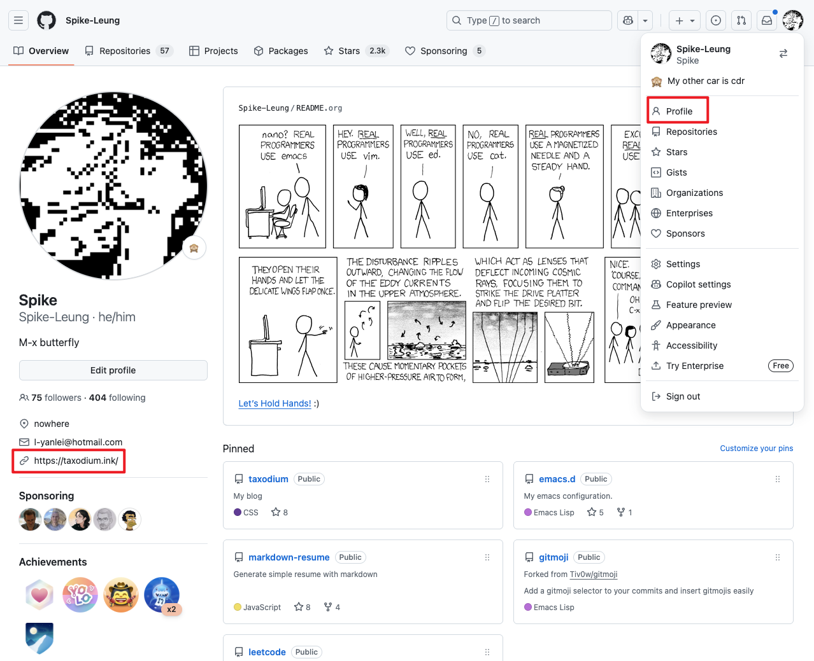

给博客添加 Webmention
🎶 The Great Escape Of Our Time - 椅子乐团 The Chairs
什么是 Webmention
Webmention 是一种通知，表明一个 URL 链接到另一个 URL。
例如，Alice 在她的博客上写了一篇有趣的帖子。随后 Bob 在自己的网站上写了一篇回复她的帖子，并链接回 Alice 的原始帖子。 Bob 的发布软件向 Alice 发送一个 Webmention，通知她的文章被回复了， Alice 的软件可以将该回复显示为原始帖子上的评论。
Webmention 和评论差不多，只是它的门槛相对高一点，需要你写一篇文章，并链接到你想评论的文章。 (或者在社交媒体如 BlueSky、Mastodon 上发一个帖子，引用文章的链接)
如果对方支持了 Webmention，你发送 Webmention 通知后，对方就会将你的内容显示出来。
Webmention 的大致流程

为什么接入 Webmention
实现跨站点的对话。当你链接到某个网站时，你可以发送一个 Webmention 来通知它。如果该网站支持 Webmention，那么该网站可能会将你的帖子显示为评论、赞或其他回应，就这样，你就实现了从一个站点到另一个站点的对话！
我觉得 Webmention 和集成在博客中的评论系统是类似的。
如果你要回应一篇文章，通过 Webmention，你需要写一篇文章链接到这篇文章，并发送一个 Webmention 通知。通过如 Bridgy 之类的服务，也可以收集社交网络上（Blusky、Mastodon 等）关于文章的回应，例如点赞、转发等。
但我觉得并没有比集成于博客的评论系统更方便。
从数据层面看，除非自己买服务器搭建 Webmention，否则用第三方提供的服务，数据依然不在自己的手上。
所以我为什么要接入 Webmention？
最开始是在 我想让自己说话不那么“端着” | Owen Young 中了解到 Webmention，当时觉得有些麻烦。
最近网上冲浪的时候，看到不少博客都有集成 Webmention，然后了解了一下 webmention.io 的使用，看起来不麻烦，就想着集成看看。
非要找个理由的话，就是折腾一下，好玩吧。
如何接入 Webmention
如果自己搭建的话，可以参照 Webmention 规范 实现；或者找现成的工具，你可以在 Webmention | IndieWeb 找到很多工具和服务。
我目前实现很简单，接收依赖 webmention.io 提供的服务，需要编写一点 脚本 调用 API；发送通过手动触发；麻烦一些的地方是给博客添加 microformats 。
作为接收方
接收我使用 webmention.io 提供的服务，按照 How to Set Up Your Website for IndieLogin.com 的说明进行设置。
我用 GitHub 进行验证，需要在 GitHub Profile 中包含我的网站，同时在网站添加一个链接。
{kind=link}

<head>
<!-- 省略其他内容 -->
<link href="https://github.com/spike-leung" rel="me">
<!-- 省略其他内容 -->
</head>
这样就能通过 webmention.io 的验证了。
接下来按照 webmention.io 提供的 API 获取 Webmentions 的数量和内容，需要在页面上添加 HTML 元素，写 一些 JS 代码 调用 API 渲染数据（也可以用 webmention.js），再写点 CSS 优化一下样式。
如果你打算渲染 Webmentions 返回的 HTML，需要注意 Cross-site scripting (XSS) 攻击。
防止 XSS 攻击
防止 XSS 攻击，Trusted Types API 看起来不错，可惜浏览器支持度不够。
防御 XSS 主要从两方面入手：
- 净化 (sanitize) 用户输入的内容。可以使用 DOMPurify 处理。
- 使用 Content Security Policy (CSP) 限制执行。Netlify 有插件支持，倒是方便了许多。要注意的是，当开启了 CSP，一些行内的脚本，如写在元素上的
onclick、onchange等会被阻止执行，需要将他们挪动到 JS 文件里。
也可以期待一下 Element: setHTML() method 被广泛支持，它提供了一种 XSS 安全的方法用于插入 HTML 内容到页面中。
搭建好之后，可以用 Webmention Rocks! 提供的服务进行测试。
至于查看 Webmentions 也有几种方法：
- 到对应的页面下看
- 订阅 webmention.io 提供的 Mentions Feed
- 使用 webmention.io 提供的 Web Hook 通知自己
- 到 webmention.io 的 Dashbaord 查看
作为发送方
作为发送方，你只需要在你的文章中包含对方的链接，就可以向对方发送 Webmention 了。
但是如果你想让你发送的内容更丰富一些，就需要通过 microformats 标记网站信息，如用户名、头像、内容、你要提及的链接等，从而让 Webmention 解析展示。
按理说只要包含了对方链接，对方就能收到 Webmention。
但我发送后却收到了「The Microformats at the source URL do not contain a link to the target URL.」的错误提示。
可能是因为我使用 microformats 标记了内容，此时需要确保 microformats 解析后的内容中，包含对方的 URL。
最主要的标记是 h-card 和 h-entry， h-card 标记用户信息；h-entry 标记内容信息，标记的部分会作为 Webmention 的内容呈现。
关于 h-card 和 h-entry 的作用，推荐看 Sending your First Webmention from Scratch，文章循序渐进地引导你添加相应的标记，并且有对应的示例，同时文章本身也可以用来测试 Webmention 的发送。
microformats 这些标记，可以和 HTML 做类比，它也是有层级关系的，最终会解析成一个 JSON 的树形结构。在你测试的时候，可以从 Microformats Parsers 找一个 parser 检查你的文章解析出来的内容。
关于 h-entry
what is the bare minimum list of required properties on an h-entry 中回答道，没有任何 h-entry 的属性是强制要求的。
但推荐至少包含：
一些我建议加上的：
- u-in-reply-to 标记你回应的链接。此外 u-like-of、u-report-of 等可以用于标记不同的引用目的
- dt-published 标记文章的发布日期
- dt-updated 标记文章的更新日期
关于 h-card
h-card 是用来标记用户信息的，介绍一些我觉得比较有用的：
- p-name 标记个人或组织的全称
- u-email 标记邮箱，一般标记在 mailto 链接上
- u-logo 标记你的 logo，一般标记在
<img>标签上 - u-photo 标记你的头像，一般标记在
<img>标签上 - u-url 标记你的主页，一般标记在一个链接上
- p-note 标记额外信息，有人会用来写自我介绍
除了这些，还有标记地址、性别、国籍、出生日期、工作等，感兴趣可以自行探索。
h-card 可以结合 h-entry 的 p-author 用于标记文章的作者信息，在这种场景下， h-entry 需要是 h-card 的父元素。
综上，一个相对完整的 microformats 标记是这样的：
<!doctype html>
<meta charset="utf-8">
<title>Hello World</title>
<body>
<div class="~h-entry~"> <!-- 注意 ~h-entry~ 是其他属性的父元素，包含了 h-card -->
<div class="p-author h-card"> <!-- 使用 h-card 结合 p-author 标记作者信息 -->
<img src="https://aaronpk.com/images/aaronpk.jpg" class="u-photo" width="40">
<a href="https://aaronpk.com/" class="u-url p-name">Aaron Parecki</a>
</div>
<!-- 标记引用的链接，表示回复 -->
<p>in reply to: <a class="u-in-reply-to" href="https://aaronparecki.com/2018/06/30/11/your-first-webmention">@aaronpk</a></p>
<!-- 标记回复的内容 -->
<p class="e-content">Trying out this guide to sending webmentions</p>
<p>
<!-- 标记当前文章的 URL -->
<a href="https://aaronpk.com/reply.html" class="u-url">
<!-- 标记当前文章的发布日期 -->
<time class="dt-published" datetime="2018-06-30T17:15:00-0700">July 30, 2018</time>
</a>
</p>
</div>
</body>
具体如何标记，要看你博客中的 HTML 标记是如何排布的，在标记时注意层级关系就好。测试阶段可以多利用 Microformats Parsers 解析你的文章，检查解析出来的内容是否符合需要。
都设置好之后就可以向集成了 Webmention 的网站发送通知了，你可以：
- 找到引用文章的 Webmention 入口，填写你的文章 URL 并提交
- 自己构建 POST 请求，或用第三方服务，如 Telegraph 手动发送
- 考虑集成 webmention.app 等实现自动发送
一般发送之后都会有响应，如果你的 Webmention 没有展示出来，可以基于返回信息进行问题排查。
一些问题
目录󠄃
关于 u-in-reply-to 的使用
u-in-reply-to 用于标记 h-entry 中要回复的链接，应该结合 e-content 标记回应的内容。
如果只是引用了一些链接，并没有对于这些链接的回应，不需要用 u-in-reply-to 标记，直接发送 Webmention 就好了。
关于 h-entry 的使用
尽管可以设置多个 h-entry ，但我觉得一篇文章一个 h-entry 就够了。
原因是 h-entry 往往需要指定文章标题、作者、发布和更新时间、内容等，这和一篇文章的内容是刚好对应上的。
如果标记多个 h-entry ，比较难保证每个 h-entry 都有这些信息，尽管 h-entry 不要求包含任一属性。
我的建议是：
h-entry设置在包含文章内容、作者信息、发布日期等的父元素上e-content设置在包含整篇文章内容的元素上好处是，只要在文章中的链接都能被发现，不需要额外再标记什么。缺点是，
e-content标记的内容可能太多，导致实际回复的部分被淹没其中。因为文章中既包括自己的文章部分，也包括提及对方网站的部分，所以会导致提及内容被淹没。
一种做法是，单独为回复的内容写一篇文章，文章里都是回复的内容。这些内容你可能不想放在主页，你可以放到某个路径下，例如
/webmentions，或者/reply；也可以放到一个子域名下。参考：
webmention.io 的 target 需要完全匹配
见 When URL has hash，webmention.io'a API not reponse data #229。
有的 webmention 的发送时的 URL 是 https://domain/page.html#abc ，通过 webmention.io 的 API，target 参数设置为 https://domain/page.html 是无法获取到数据的，需要将 target 设置为 https://domain/page.html#abc ，完全匹配才行，因为目前存储的就是完整的 URL。
如果 target 是 https://domain/page.html#abc ，注意需要将 # 转义 成 %23 。
我目前的处理方法是 用 基于域名获取所有数据的 API 先获取所有的数据，然后基于页面的 URL 进行过滤。用 請求多個 target 的 API 同時請求頁面的 URL 和帯有 fragments 的 URL，手動維护帯有 fragments 的 URL。
相關代碼
const TargetFragments = {
'https://taxodium.ink/43.html': ['#82F4E24E-345E-48C9-9A3B-567A81BC40A0']
}
async function loadWebmentionContent() {
try {
const target = getTargetUrl();
const targetsWithFragments = TargetFragments[target] ? TargetFragments[target].map((hash) => `${target}${encodeURIComponent(hash)}`) : []
const allTarget = [target, ...targetsWithFragments];
const searchParams = allTarget.map((t) => `target[]=${t}`).join("&")
const response = await fetch(`https://webmention.io/api/mentions.jf2?${searchParams}`,);
const feed = await response.json();
const feedList = feed?.children?.filter((c) => c["wm-target"].indexOf(target) !== -1)
document.querySelector(".webmention__count").innerText = `(${feedList.length})`;
const container = document.querySelector(".webmention__list");
renderWebmentions(feedList, container);
} catch (err) {
console.error(err);
}
}
虽然不优雅，但不用請求全量数据，很多頁面其實都没有 Webmention，這可以减少這些頁面需要加載的数据。
发送了 webmention 但是没有显示出来
一种可能是，webmention 要求源页面中包含目标页面的链接，而有的源页面是由 JS 动态渲染的，不是静态的，导致 webmention 无法从源页面找到目标页面的链接，而认为源页面没有发送 webmention。
排查的方法是，在浏览器中查看网络请求，找到源页面返回的内容，搜索一下内容中是否包含目标页面的链接。
也可能是网站显示的问题，可以尝试联系作者。
写在最后
以为接入挺简单的，但实际做还是折腾了两天，果真是「纸上得来终觉浅，绝知此事要躬行」呀。
如果你链接了我的文章，欢迎你向我发送 Webmention，这样就建立了文章之间的链接。一方面我可以看看别人引用时的评论；另一方面，其他读者也可以通过 Webmention 知道你的文章。
我认为这是一件共赢的事，你引用了我的链接，帮我推广了给更多人；而你向引用的文章发送 Webmention，也能帮忙推广你的内容。
何乐而不为？
其他参考文章
- 透過 webmention 來搜集 blog 的社群迴響 by Jason Chen
- Webmention 实现参考 by Runye
- Now, I'm in IndieWeb? by Owen Young
- 在 Hexo 项目中添加 Webmention by Cytrogen
- Webmention 简明指南 by Eltrac